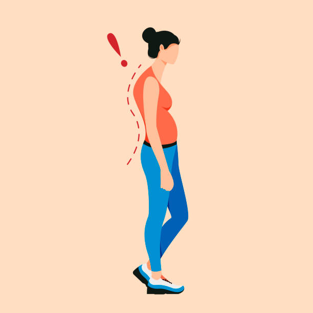

Levitat-It is a backpack company. We design levitating backpacks with 4 propellers. There is also a platform, for backpacks to sit there. We don't make backpacks with the product, but if you want one from us, you have to buy one with a backpack. It will cost $30 more than the original price.
We apprecite all sorts of funding, no matter how much money. Sponsors will be presented in our store and on our website.
This levitating backpack is controlled by a chip; it can come with the remote control or be installed in your phone.
A levitating backpack is a neccesity for children. Posture may be forever damaged or a child may have back pains. According to kidshealth.org, by putting a heavy weight on your shoulders in the wrong way, the weight's force can pull you backward. So people who carry heavy backpacks sometimes lean forward. Because of the heavy weight and this unnatural position, they can develop shoulder, neck, and back pains.
